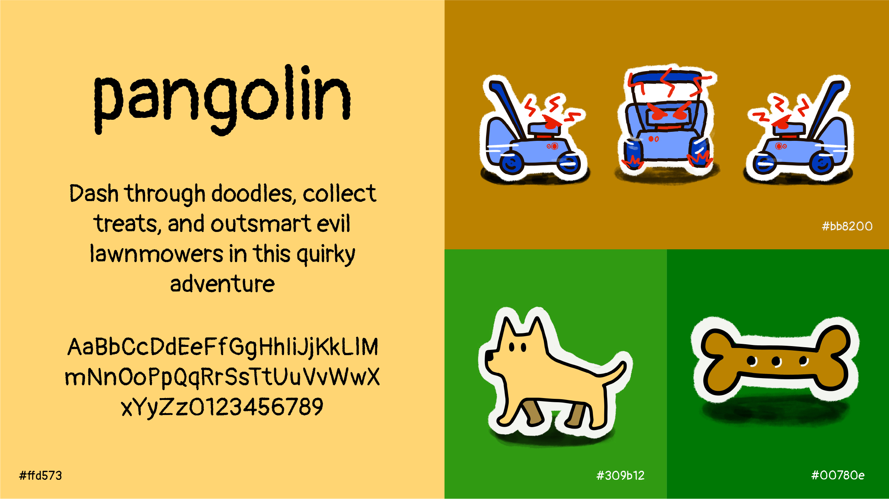
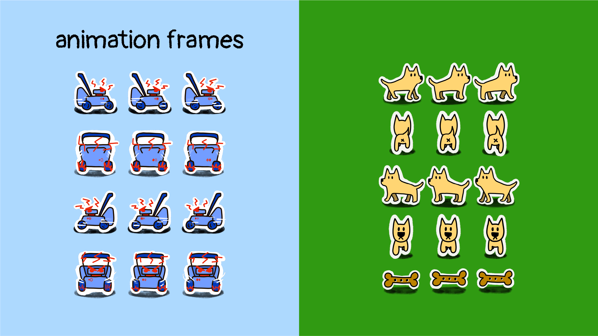
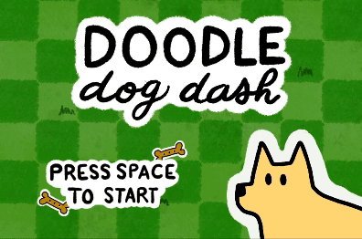
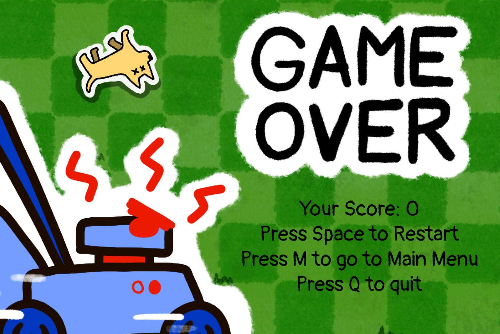
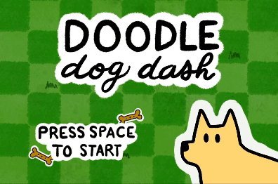
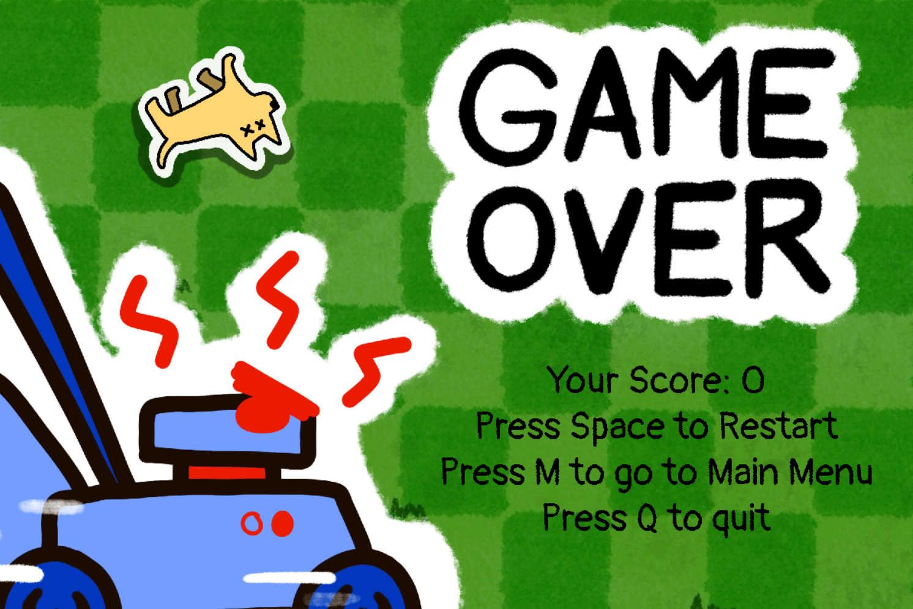

Doodle Dog Dash is a Python game I created where you take
control of an adventurous dog on a mission to collect treats
while avoiding AI-controlled lawnmowers gone rogue.
The game combines fun visuals with simple yet engaging
mechanics, offering a playful experience as you dodge
danger and gather rewards.
Doodle Dog Dash features a playful, doodley aesthetic,
as if it leaped right out of a middle schooler's notebook.
The game is packed with textured patterns and hand-drawn
illustrations that I created in Procreate, giving it an
authentic doodle vibe. The quirky visuals and fun,
sketchy style add to the game’s charm and make it
visually engaging.


Gameplay
Welcome to Doodle Dog Dash! In this hand-drawn adventure,
you play as a fun-loving dog dashing through a world
straight out of a doodle sketch. Your goal is simple:
use the arrow keys to collect as many treats as you can
while avoiding the evil lawnmowers taken over by AI.

 


